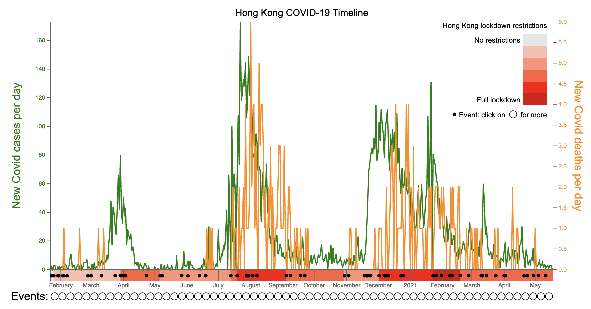

Visualising Hong Kong's Covid-19 Lockdowns
Visualisation
After creating a Covid-19 timeline for London, we're expanding the idea to the other cities of this project. Created using d3.js, this interactive visualisation displays Sydney's daily new cases and deaths over time, against the approximate level of lockdown restrictions and events detailing the changing situation.
Click to read more and view the chart in full.
